The Manuscript
Just as the household used its cut-and-paste harmonies to synthesize religious differences for patrons, so too did the members of Little Gidding design and internally publish manuscripts as a means of resolving discord amongst themselves. For instance, after the conclusion of a series of Little Academy meetings, the household neatly copied the resulting dialogues into large, beautiful manuscripts composed of thick, high-quality paper. The text was written in Nicholas Ferrar’s handwriting — although not necessarily entirely by him, since his distinctive penmanship was imitated by younger members of the community — then bound in black leather with simple gilt edges. As is noted in a series of dedicatory letters copied at the beginning of the manuscript, the elder sisters Mary and Anna Collet presented these dialogues as a gift to the matriarch Mary Ferrar, who in turn asked them to give the books to their distant sister Susanna Mapletoft, who had married and left the community. Such gifts blazon for a distant family member the tangled web of love, obedience, and devotion that defined community at Little Gidding, and do so in a way that attempts to draw her back into that web.
It is in this context that we might begin to understand Susanna Collet’s commonplace book, dated 1635. We begin by describing its physical features before speculating about its ownership and purpose.
Physical Description
An octavo measuring about sixteen centimeters in length, the manuscript is bound in brown morocco with gold tooling. The front and back are identical, and both feature a gold “I C” artfully placed among the floral designs. In the library record, the binding is attributed to Mary Collet, the eldest sister, although anyone at Little Gidding, especially among the women, may have bound it.
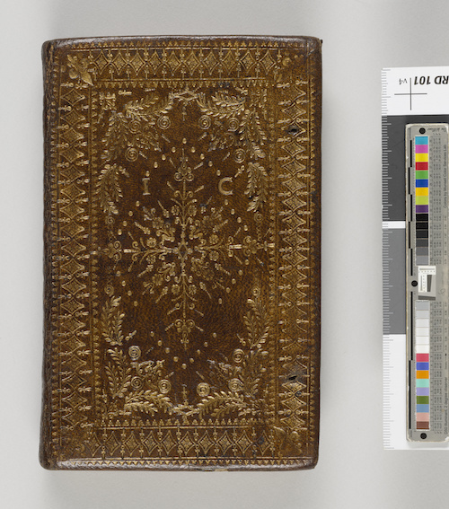
Cover of Collet's manuscript. Morgan Library & Museum PML 128838. Image courtesy of the Morgan Library & Museum.
Inside, the manuscript comprises 146 leaves and seventeen quires, with most of the gatherings being four bifolia of eight leaves or sixteen pages. However, some of the gatherings contain five bifolia of ten leaves, like the first, ninth, and fourteenth gatherings. The pages are not numbered, but a signature number is visible on the bottom right corner of the first leaf’s recto in some of the gatherings. In the foliation used in this edition, we have followed these signature numbers (which are sometimes implied), followed by a hyphen and the leaf number within the gathering.
The manuscript’s text is separated into two main sections. The first and larger part is the commonplace book, which is itself subdivided into two halves, each with a separate title page: excerpts from scripture, titled “Collections of Some Short Sentences out of the holy Scriptures, vpon Diuers Subiects,” and excerpts from secular authors, titled “Collections out of Divers Humain Authors Vpon the forgoing Subiects.”
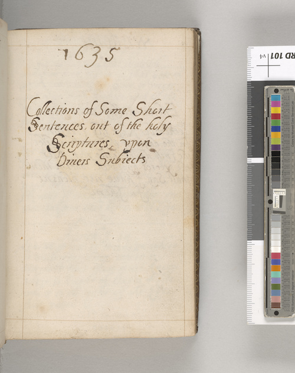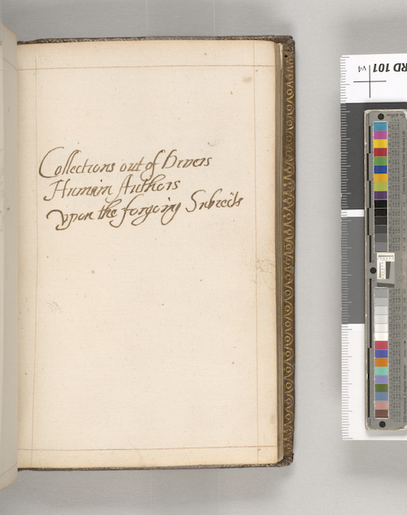
Folios 1-2r and 9-4r of Collet's manuscript. Morgan Library & Museum PML 128838. Image courtesy of the Morgan Library & Museum.
Two pages after this second title page is an alternative title: “Collections out of Diuers Learned Authors vpon the Preceeding Subiects.”
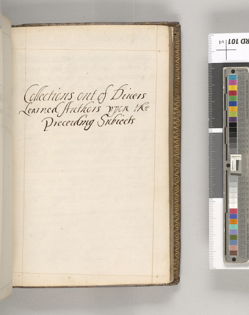
Folio 9-5r of Collet's manuscript. Morgan Library & Museum PML 128838. Image courtesy of the Morgan Library & Museum.
Each page contains between one and six excerpts separated by a single horizontal line. In the first half, excerpts from scripture, totaling 131, are each labeled with a citation to a book, chapter, and verse of the Bible, although Collet occasionally misattributes, mislabels, or skips one.
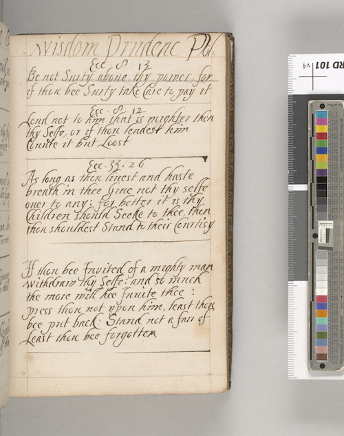
Folio 1-6r of Collet's manuscript. Morgan Library & Museum PML 128838. Image courtesy of the Morgan Library & Museum.
The excerpts from secular authors in the second half, totaling 274, are not attributed to their sources in the original manuscript, although this edition provides these citations where possible.
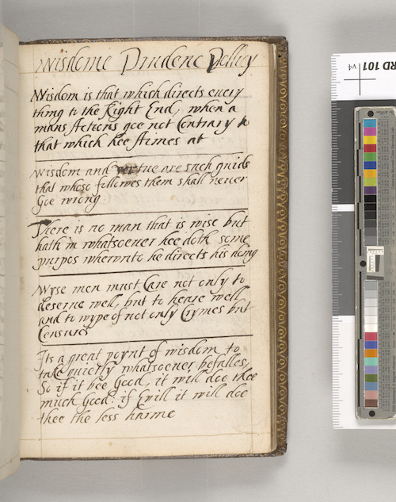
Folio 9-6r of Collet's manuscript. Morgan Library & Museum PML 128838. Image courtesy of the Morgan Library & Museum.
Both halves are further organized by a series of topics written in a larger hand at the top of each page. These topics run in roughly the same order in each section, beginning with positive categories, such as wisdom, thankfulness, and friendship, followed by more negative emotions like shame, wrath, anger, and envy, ending finally with death. At the end of both sections is a trailing page (folio 9-6r in the scriptural half, folio 15-2r in the secular half) that contains excerpts but no topic heading, and the quotes on these pages do not seem to follow one single theme.
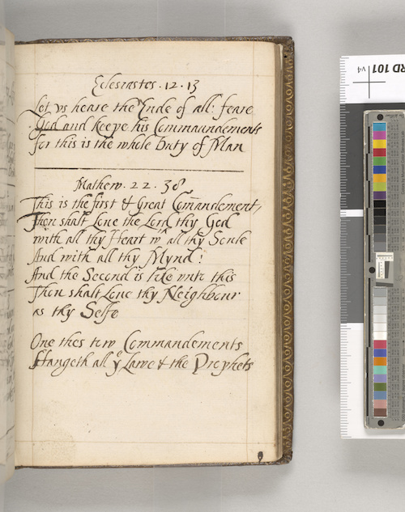
Folio 9-1r of Collet's manuscript. Morgan Library & Museum PML 128838. Image courtesy of the Morgan Library & Museum.
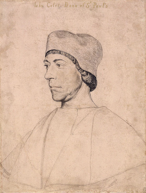The second part of the manuscript contains texts related to the Collet family. First is a copy of Dean John Colet’s A ryght fruitfull monicion concernynge the order of a good Christen mannes lyfe (1534), prefaced with a title page and poem that, from internal evidence, seems to have been written by Susanna Collet. Colet was a Reformation theologian, preacher, and humanist scholar. With his father’s wealth and his friend Erasmus’s guidance, he re-founded St. Paul’s School in 1512, installing William Lilye as its first master. While the precise link between Colet and the Collets of Little Gidding is unknown, the family clearly took pleasure in claiming “the famous Docter Collet Some tymes Deane of Paules” as an ancestor, and both branches use the same coat of arms.
After several blank leaves, there follows a short mother’s legacy poem written, again, by Susanna Collet. After more blank leaves, the volume ends with a selection from Fancis Quarles’ Hadassa (1621), written vertically along the length of the page and likely in a different hand. Taken together, the components in this second part of the manuscript appear to trace an alternative genealogy of the household’s piety — one that looks back not through the Ferrar line to the Protestant martyr Robert Ferrar, as was often recited, but from Nicholas Ferrar’s sister Susanna through her husband John Collet’s line to Dean John Colet.
The scribe’s attention to detail, fastidious organization, and neat handwriting all point to the book’s intentional design, as well as her deep care for the book. Besides the title pages and the concluding text at the back of the manuscript, each page is consistent in appearance. Four faint, straight lines written in light ink frame each page; these may have been made using a pin and string as a guide, as there are small prickings on the corners of some of the pages.
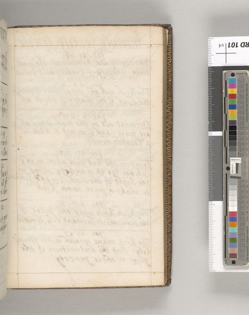
Folio 6-7r of Collet's manuscript. Morgan Library & Museum PML 128838. Image courtesy of the Morgan Library & Museum.
On some of the pages, lining to keep the writing straight is visible — for example, on folios 9-9v and 10-6v.
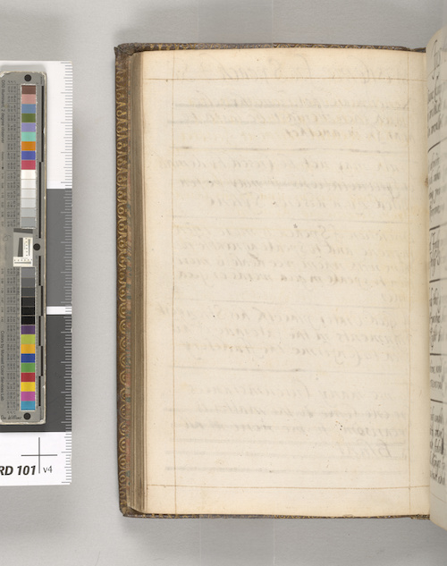
Folio 17-3r of Collet's manuscript. Morgan Library & Museum PML 128838. Image courtesy of the Morgan Library & Museum.
A blank page usually separates different topics in the commonplace book, unless the final page of one topic has just one or two fragments. The handwriting is uniform throughout, although the ink changes color, sometimes appearing oranger and sometimes blacker, and the letterforms range in thickness and neatness. The ruling, pinholes, and changes in ink, as well as the trimming of some signature marks, suggest that the scribe planned out the manuscript, composed and wrote it over time — perhaps days or even years — while it was still in loose gatherings, then bound the book upon its completion.
Purpose
The manuscript was clearly owned by Joyce Collet. Her name is written on two preliminary leaves, though one has been crossed out, and her initials, “I C,” are stamped in gold on the cover.

Ownership mark in Collet's manuscript. Morgan Library & Museum PML 128838. Image courtesy of the Morgan Library & Museum.
However, ownership marks do not necessarily imply authorship, especially with early modern women’s manuscripts, as many contemporaneous examples indicate. For example, the miscellany attributed to Elizabeth Lyttelton has the signature of her sister, Mary Browne, inscribed on the front and back flyleaves. Ursula Wyvill, the author and scribe of another devotional miscellany containing possibly original prayers and poems, is only known through an inscription left by her sibling, reading, “A Coppy of a Booke that was writ by my Ever Deare Sister Wyvills owne Hands.” That Joyce’s name is written on the flyleaf and her initials on the binding has led to the assumption that she made the manuscript, but this is not necessarily true.
From our analysis, the 1635 commonplace book’s most likely scribe and composer is actually Joyce’s mother Susanna. This is evident, first, from internal textual evidence. Toward the end of the manuscript are several poems clearly written by Susanna. These were copied in the first person and include a mother’s legacy poem of “Counsels by a Mother Given / Vnto her Children, they twise Seven.” Second, and more importantly, the hand very closely matches that in a letter written by Susanna on January 6, 1635/6, around the same time as the manuscript.
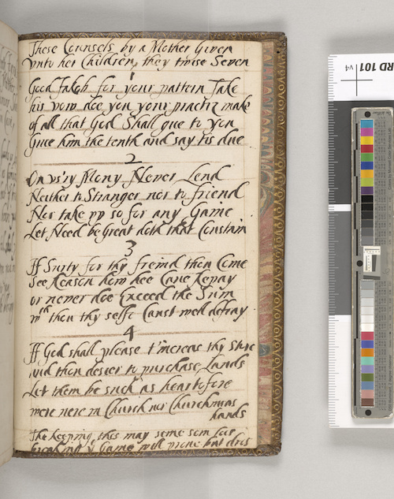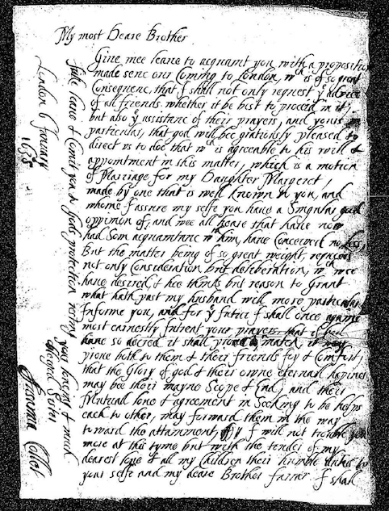
(Left) Folio 17-3r of Collet's manuscript. Morgan Library & Museum PML 128838. Image courtesy of the Morgan Library & Museum. (Right) FP 1006 (1635-1636) Virginia Company Archives © Magdalene College, Cambridge.
Although there is no known sample of Joyce’s handwriting that might be used for comparison, the children at Little Gidding were taught a distinctive italic hand in imitation of Nicholas Ferrar’s own formal script. In fact, this script appears twice in the manuscript, where additional excerpts are copied, possibly by Joyce, on folios 15-1r and 17-4v.
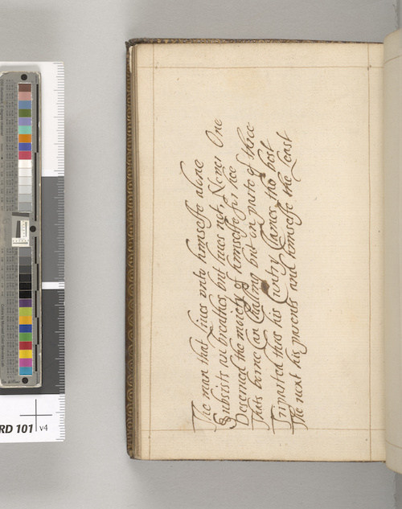
Folio 17-4v of Collet's manuscript. Morgan Library & Museum PML 128838. Image courtesy of the Morgan Library & Museum.
However, if the entire text were copied by Joyce, it is likely she would have used this more ornate style of writing throughout. Thus it appears the manuscript was made by Susanna Collet and then gifted to her daughter Joyce, who may have made some slight additions.
This scenario fits well with what we know of how the household at Little Gidding used manuscripts and books to cement familial relationships and smooth over potential disagreement and discord. In 1635, Joyce would have been twenty-one years old. While we have been unable to find a record of when she married Edward Wallis, it seems possible the book was intended was a wedding gift granted from mother to daughter around the time of her nuptials. If so, it would serve a similar function to the Story Books that Mary and Anna Collet sent to their married sister Susanna Mapletoft: namely, to remind Joyce of where she came from and the principles that her family instilled in her after she left Little Gidding to join her husband at Sawtry, where he was a reverend. It may also have served as a kind of toolkit to aid Joyce as she moved into the role of wife and mother. Thus the commonplace book provided her with wisdom and advice for many occasions, neatly organized by topic, while Colet’s A ryght fruitfull monicion concernynge the order of a good Christen mannes lyfe and Susanna’s mother’s legacy poems were intended to keep her grounded in her own family history, even as she took on a new surname. Whether or not the book was made on the occasion of Joyce’s marriage, Susanna might have seen such a gift as especially necessary for a daughter who, as we know from the Little Academy dialogues, was a rebellious teenager.
Provenance
For the two centuries after Susanna gifted the book to her daughter Joyce, its whereabouts are unknown. Presumably it, like the Story Books, stayed in the Collet and then Wallis families for generations.
Then, in 1862, the manuscript appears in Willis and Sotheran’s A Catalogue of Valuable New and Second-hand Books available for sale at their antiquarian bookshop in London. There, it is advertised as the autograph work of “Lady Joyce Colet, belonging to the family of the celebrated Dean of St. Paul’s,” with no suggestion that Willis and Sotheran recognized the book’s connection to Little Gidding or Susanna Collet’s role in its production. They priced it at a pound and a shilling, about 160 in U.S. dollars today. Since the manuscript does not show up in later editions of the firm’s catalogue, it can be assumed that the manuscript was sold within the next fifteen years.
The book next appears in the hands of Philip C. Duschnes, a New York-based rare book dealer who also offered samples of fine printing and illuminated manuscripts at his shops. It is unclear when Duschnes acquired it. Evidence of Collet’s manuscript is not found in his 1954 publication, A Complete Catalogue: Twenty-Five Years of the Limited Editions Club Books as well as Original Leaves from Famous Printed Books & from Medieval Manuscripts. It is possible that these catalogues are not comprehensive, or it is possible the book was only with Duschnes a short time before Julia Parker Wightman bought it from him in 1956. Evidence of Wightman’s ownership can be found on the bookplate pasted to the marbled paper on the inside of the cover of the manuscript. Printed in gold ink on white paper, the image depicts three men on horseback rabbit hunting above “Julia Parker Wightman.”
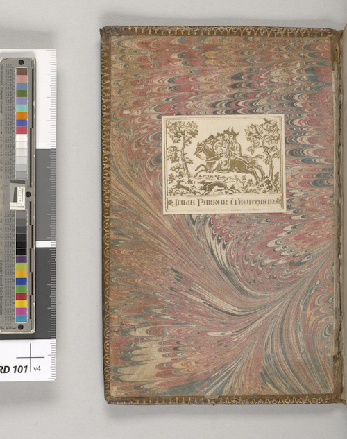
Julia Parker Wightman's bookplate in Collet's manuscript. Morgan Library & Museum PML 128838. Image courtesy of the Morgan Library & Museum.
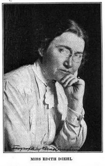Given the history and function of the manuscript, it is of note that Wightman owned it. A bookbinder, bibliographer, and collector, Wightman was a prominent member of New York City book circles. Like the women of Little Gidding, Wightman learned to bind from another woman, Edith Diehl, author of the foremost twentieth-century manual on bookbinding, Bookbinding, its Background and Technique (1980). Wightman was also a member-turned-director of the Hroswitha Club, a women’s club for bibliophiles and collectors, and was elected one of the first female members of the notoriously misogynistic Grolier Club in 1977. Even as Willis and Sotheran did not recognize the connection between the manuscript and Little Gidding, Wightman, with her deep knowledge of bookbinding, likely did, since the household was known among bibliophiles for the fine leather bindings produced by the Collet sisters.
Upon her death in 1995, Wightman bequeathed her entire collection — incunabula, illuminated manuscripts, fine bindings, miniature books, children’s books, and herbals — to The Morgan Library & Museum, where she had been a fellow since the 1950s and a trustee since the 1970s. The manuscript remains at the Morgan today, where it is marked as item 128838. The cataloguer has recognized Collet’s connection to the Little Gidding community but, understandably, has misattributed the handwriting to Joyce Collet, since her signature is on a flyleaf and her initials are on the front cover of the binding.